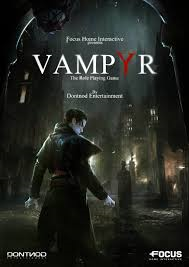

ABOUT THIS GAME
London, 1918. You are newly-turned Vampyr Dr. Jonathan Reid. As a doctor, you must find a cure to save the city’s flu-ravaged citizens. As a Vampyr, you are cursed to feed on those you vowed to heal. Will you embrace the monster within? Survive and fight against Vampyr hunters, undead skals, and other supernatural creatures. Use your unholy powers to manipulate and delve into the lives of those around you, to decide who will be your next victim. Struggle to live with your decisions… your actions will save or doom London. BE THE VAMPYR – Fight and manipulate with supernatural abilities FEED TO SURVIVE – Be the savior and the stalker SHAPE LONDON – A web of interconnected citizens reacts to your decisions
SYSTEM REQUIREMENTS
Requires a 64-bit processor and operating system
OS: Windows 7/8/10 (64 bits)
Processor: Intel Core i3-2130 (3.4 GHz)/AMD FX-4100 (3.6 GHz)
Memory: 8 GB RAM
Graphics: 2 GB, GeForce GTX 1050 (Legacy GPU: GeForce GTX 660) / Radeon R7 370
Storage: 20 GB available space